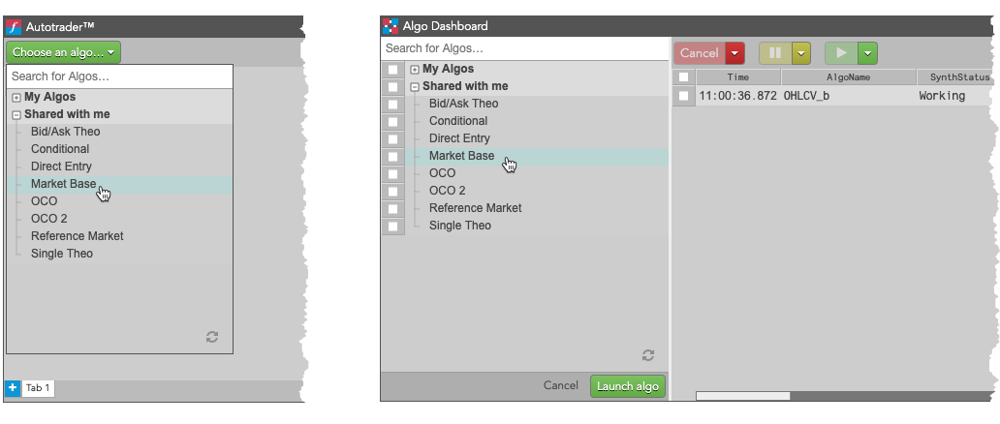
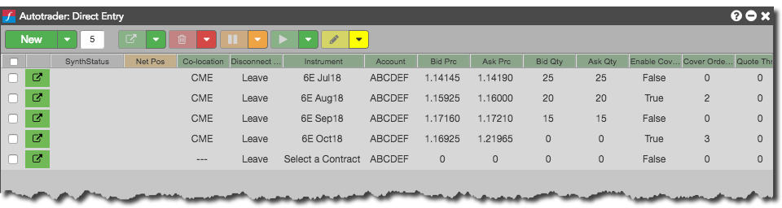

TT offers a suite of public algos that provide automated order entry strategies that allow users to quote a market based on a set of input parameters. Users are able to customize the quoting behavior, specify an action taken after a fill occurs, and control the risk parameters per instance. The strategies can be run from either Autotrader or Algo Dashboard. The values can be supplied manually by the user, linked from Excel, or loaded using order templates.

TT provides the following market-making algos:
The algo parameters allow you to customize the quoting behavior, specify an action taken after a fill occurs, and control the risk parameters per instance.

The quoting orders are submitted based on the base price and quantity inputs and may be adjusted depending on the If Quote Outside Join Mkt, If Quote Inside Join Mkt, and Don’t Cross Market settings. The strategy will automatically reprice quoting orders upon updates to the base price inputs. You can control the frequency of order updates with the Quote Throttle parameter. When a fill is received, the algo can automatically submit cover orders a specified number of ticks (Cover Offset) away from the fill price.
Based on the Manual Requote setting, the algo will automatically requote after the Fill Throttle has passed or remove all quotes from the market until the Requote button is clicked. The quote order will either be reduced or canceled based on the open position per instance versus the Max Pos allowed. The algo also gives you the option to reset the open position, if needed.
Notes:
Warnings:
| Parameter | Description | Used by |
|---|---|---|
| Instrument | Contract for which to submit quote/cover orders (and the market to use when determining the base price for the Market Base algo). | All |
| Bid Prc | Direct price to submit the buy quoting order. | Direct Entry |
| Ask Prc | Direct price to submit the sell quoting order. | Direct Entry |
| Theo Price | Base price to submit the buy and sell quoting orders (Single Theo) | Single Theo |
| Theo Bid | Base price to submit the buy quoting order | Bid/Ask Theo |
| Theo Ask | Base price to submit the sell quoting order. | Bid/Ask Theo |
| Ref Instrument | Contract to use for the base price to submit buy and sell quoting orders. | Reference Market |
| Ref Prc Multiplier | Adjusts the price of the reference market before calculating the base price for the quoting orders. Default setting is 1. | Reference Market |
| Bid Offset | Offset, in ticks, from the base price for the buy quoting order. Positive value is away from market, negative value is toward market |
Single Theo Bid/Ask Theo Market Base Reference Market |
| Ask Offset | Offset, in ticks, from the base price for the sell quoting order. Positive value is away from market, negative value is toward market |
Single Theo Bid/Ask Theo Market Base Reference Market |
| Bid Qty | Quantity of the buy quoting order. | All |
| Ask Qty | Quantity of the sell quoting order. | All |
| Enable Cover Orders | Whether to submit an offsetting order to the market when you receive a fill on the quoting order. | All |
| Cover Order Offset | Number of ticks away from the quoting order fill price at which your cover order will be submitted. | All |
| Quote Throttle: | Delay (in milliseconds) in which a quote order may be updated. The throttle is observed from the time of last order update. If a price update occurs within the throttle time, the order update will be suppressed until the throttle time has elapsed. This parameter can be used to reduce excessive quoting. | All |
| Fill Throttle | Delay (in milliseconds) in which a quote order will not update after receiving a fill. Should a second fill occur during the throttle duration, the throttle time will be reset. | All |
| Max Pos | Maximum open position (used for both long and short) before the algo stops quoting the position-increasing side of the market. | All |
| Manual Requote | Whether to remove all quoting orders from the market when a fill occurs; cover orders will remain working. If this parameter is set to True, the Requote button will need to be clicked to resume quoting. | All |
| If Quote Outside, Join Mkt | Whether to adjust a quoting order to the current market price when the calculated quote price is outside the inside market price. | All |
| If Quote Inside, Join Mkt | Whether to adjust a quoting order to the current market price when the calculated quote price is better than the inside market price. | All |
| Don’t Cross Market | Whether to prevent a quoting order from crossing the inside market. | All |
| Use Cancel/ Replace | Whether to reprice the quoting order with a cancel/replace rather than using change. | All |
| Requote | Click the button to resume quoting after a fill has occurred when Manual Requote is set to True. | All |
| Reset Open Pos | Click the button to reset your current open position for the running instance back to zero | All |
An Order Management Algo (OMA) is an algo that can take control of and manage one or more existing orders. TT provides the following Order Management Algos (OMAs) to let you create an order that manages other orders in the market.